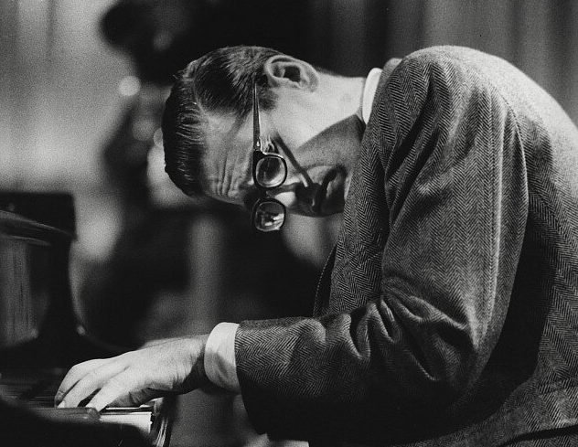

빌 에반스
인상파 재즈 피아니스트인 빌 에반스(Bill Evans)
미국의 전설적인 재즈 피아니스트로, 1957년 New Jazz Conceptions을 발표하며 데뷔했다.
기존의 재즈에서 서정성과 감미로움을 크게 부각시켜서, 일각에서는 현대 재즈 피아니스트의 거장, 재즈계의 쇼팽으로 불리곤 한다.
실제로 빌 에반스는 쇼팽을 비롯한 낭만주의 피아니스트들의 클래식 보이싱(화성)을 재즈에 도입하여 이후의 재즈 피아니스트들의
재즈 피아노 보이싱에 지대한 영향을 끼쳤다. 오히려 이제는 빌 에반스를 카피하는 클래식 피아니스트가 있을 정도이다.
조지 거슈윈과 함께 미국에서 상당히 대중적 인지도가 높은 재즈 피아니스트로 대우받기도 한다. 앞에서 이야기했듯이,
그의 작품들은 하나같이 몽환적이고 서정적인 분위기를 연출하는 특유의 작곡 기법으로 대중과 평론가 모두에게 많은 사랑을 받았다.
1957년부터 1963년까지 리버사이드 레코드에서 많은 명반들을 발매했다. 에반스는 다른 악기 연주자들과 대화하듯이 연주하는 것을 좋아했는데,
이 배경에는 그의 트리오와의 궁합도 한 몫했다. 베이시스트 스콧 라파로와 드러머 폴 모시안과의 호흡은 최고였다고 한다.
그의 대표작이자 재즈 팬 이외의 대중들에게도 널리 알려져 있는 Waltz for Debby(1962)는 바로 이 둘과 함께 녹음한 것.
안타깝게도 스콧 라파로는 클럽 빌리지 뱅가드에서의 바로 그 Waltz for Debby 라이브 겸 녹음을 마치고 열흘 후인
1961년 7월 6일 교통사고로 갑작스럽게 사망하고 만다. 이 일로 에반스는 큰 충격에 빠져서 몇 달 동안 녹음 및 공연을 하지 않았다고 한다.
빌 에반스 트리오는 오스카 피터슨 트리오와 함께 당대를 풍미한 최고의 재즈 트리오 중 하나였으며, 재즈 트리오 열풍을 불러왔던 시발점이기도 하다.
실제로 빌 에반스 트리오가 보여준 자유로운 형식과 인터플레이는 모던 재즈 트리오의 출발점으로 평가받고 있다.
이후 전설적인 재즈 기타리스트인 짐 홀과 Undercurrent를 작업했다. 이 앨범은 재즈 팬들 사이에서 최고로 회자되는 앨범 중 하나로,
듀오 앨범임에도 두 뮤지션의 역량이 워낙 넘사벽이라 허전함은 커녕 기존의 밴드 사운드와는 또 다른 풍부한 사운드를 들려준다.
이 앨범은 이후의 재즈 기타-피아노 듀오의 교과서적인 앨범으로 오늘날까지 이르고 있다. 이 둘은 이후 Intermodulation(1966)에서도 다시 듀오 앨범으로 호흡을 맞춘다.
에반스는 당시 재즈피아니스트들이 그러했듯이 버드 파웰의 영향 아래 있었지만 동시에 파웰의 거친 비밥과는 대비되는 대단히 서정적인 음색을 가지고 있었다.
이는 칙 코리아, 허비 행콕, 키스 자렛 등 많은 후대 재즈 피아니스트들에게 영향을 줬다.
특히 클래식에 강하게 영향을 받은 그의 왼손 보이싱은 동시대의 피아니스트에게는 찾아볼 수 없었던 것으로
지금까지도 그의 왼손 연주는 재즈 피아니스트들에게 지대한 영향을 끼치고 있다.
연주자세 또한 특이한데, 얼굴과 건반이 수평이 되도록 몸을 숙이고 연주하였고 이것이 그의 트레이드 마크가 되었다.
에반스를 정의하는 기본적인 틀이었던 밥 이디엄이 실로 없이 해체되고, 새로운 지평이 그 앞에 그리고 우리 앞에 출현한다.
우리는 낡은 옷을 벗어 던지고 해방된다. 우리의 피부는 새로운 색을 획득하고 우리의 의식은 새로운 세포를 획득한다.
거기에는 불합리할 정도로 뜨거운 열 발산이 있다.
세계를 뜨겁게 사랑하는 마음이 있다. 세계를 날카롭게 도려내는 마음이 있다.